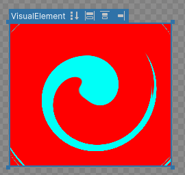
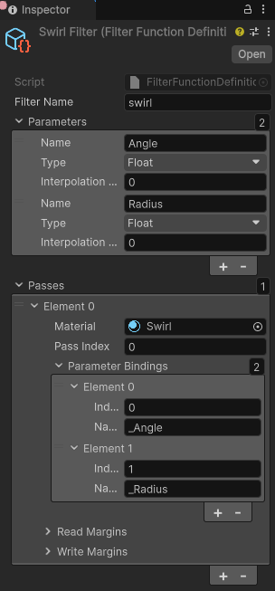
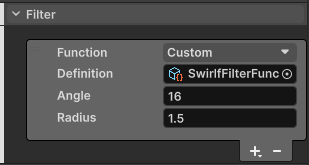

You can create custom filters to apply any effect you want to a visual elementA node of a visual tree that instantiates or derives from the C# VisualElement class. You can style the look, define the behaviour, and display it on screen as part of the UI. More info
See in Glossary. To create a custom filter, define the filter function in a custom filter asset. The custom filter asset defines the filter parameters, passes, and parameter bindings.
This example demonstrates a custom filter, created in the custom filter asset’s InspectorA Unity window that displays information about the currently selected GameObject, asset or project settings, allowing you to inspect and edit the values. More info
See in Glossary window. You can also create custom filters in C# code.
This example creates a custom filter with a swirl effect, which distorts the visual element by rotating it around a center point.

You can provide custom filter functions with parameters, set in style or directly in the UI Builder. For example, the built-in blur filter function has only one parameter: the blur radius. This custom swirl filter function has two parameters, the angle and the radius of the swirl:
This example uses a sample swirl shader and materialAn asset that defines how a surface should be rendered. More info
See in Glossary to create the swirl filter. The shaderA program that runs on the GPU. More info
See in Glossary, which defines the effect, includes two properties—_Angleand _Radius—to control the swirl’s angle and radius. The material file, Swirl.mat, is configured to use the swirl shader. To apply the effect, bind the material properties to the filter parameters.
You can find the completed files for the example in this GitHub repository.
This guide is for developers familiar with the Unity Editor, UI Toolkit, and C# scripting. Before you start, get familiar with the following:
Create the filter asset and define the filter parameters, passes, and parameter bindings in the asset’s Inspector window.
Create a project in Unity with any template.
In the Assets folder, create a folder named SwirlFilter.
SwirlFilter folder:
To create a FilterFunctionDefinition asset, right-click in the SwirlFilter folder and select Create > UI Toolkit > Filter Function Definition.
Rename the asset to SwirlFilter.
In the Inspector window for the SwirlFilter asset, set Filter Name to swirl.
In the Parameters section, add the two parameters and set the Type of both parameters to float.
Set the name of the first parameter to Angle. This controls the angle of the swirl.
Set the name of the second parameter to Radius. This controls the radius of the swirl.
In the Passes section, add a new element and set the Material to Swirl.shader.
In the Parameter Bindings section, add two bindings.
For the first binding, do the following:
0._Angle.For the second binding, do the following:
1._Radius.
To get the swirl effect, create a UXML file with two VisualElements with different background colors. The first VisualElement is the parent element, and the second VisualElement is the child element. Apply the custom filter to the parent element so that the child element is affected by the filter.
Create a new UI Toolkit USS file named SwirlFilterExample.uss with the following content:
.outside {
flex-grow: 1;
position: absolute;
height: 207px;
width: 234px;
top: 46px;
left: 27px;
background-color: rgb(255, 0, 0);
}
.inside {
flex-grow: 1;
position: absolute;
height: 75px;
width: 100px;
top: 46px;
left: 27px;
background-color: rgb(0, 255, 247);
}
Create a new UI Toolkit UXML file named SwirlFilterExample.uxml with the following content:
<engine:UXML xmlns:xsi="http://www.w3.org/2001/XMLSchema-instance" xmlns:engine="UnityEngine.UIElements" xmlns:editor="UnityEditor.UIElements" noNamespaceSchemaLocation="../UIElementsSchema/UIElements.xsd" editor-extension-mode="False">
<Style src="SwirlFilterExample.uss" />
<engine:VisualElement class="outside">
<engine:VisualElement class="inside" />
</engine:VisualElement>
</engine:UXML>
To apply the custom filter in the UI Builder, add the custom filter function to the UI Builder and set the parameters.
Double-click the SwirlFilterExample.uxml file to open it in the UI Builder.
In the StyleSheets panel, select + > Add Existing USS and select SwirlFilterExample.uss.
In the Hierarchy panel, select the parent VisualElement.
In the Inspector panel, select Inline Styles > Filter.
In the Filter section, click the Add(+) button.
In the Function dropdown, select Custom.
Set Definition to SwirlFilter.
In the Angle field, set the angle value, such as 58.9.
In the Radius field, set the radius value, such as 2.3.

You can adjust the angle and radius values to check the effect of the swirl filter in the ViewPortThe user’s visible area of an app on their screen.
See in Glossary of the UI Builder.
You can save the filter function to the USS file instead of applying it as the inline style.
In the Inspector panel of the parent VisualElement, click in the Style Class List field and enter .filter-effect.
Select Extract Inlined Style to New Class. This adds the following USS class to the SwirlFilterExample.uss file and applies the class to the parent VisualElement:
.filterEffect {
filter: filter("SwirlFilter/SwirlFilterFunction.asset" 58.9 2.3);
}